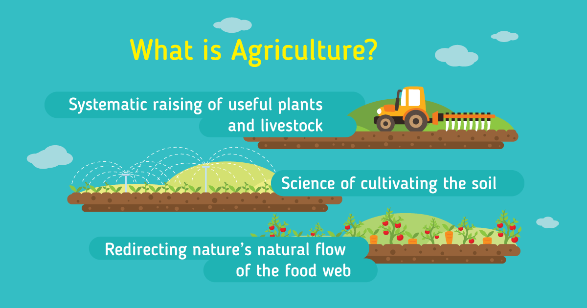

What is Agruculture

Agriculture is the practice of cultivating plants and livestock.
Agriculture was the key development in the rise of sedentary human civilization,
whereby farming of domesticated species created food surpluses that enabled people to live in cities.
The history of agriculture began thousands of years ago.
Agriculture is the art and science of cultivating the soil, growing crops and raising livestock.
It includes the preparation of plant and animal products for people to use and their distribution to markets.
Agriculture provides most of the world's food and fabrics.
(by clicking this image you can find more information about the agruculture..)
Some of the most popular agricultural products in the world:
- Corn
- Fruits
- Cotton
- peanuts
- Flowers
Impotance of Agruculture
Agriculture plays a critical role in the entire life of a given economy.
Agriculture is the backbone of the economic system of a given country. In addition to providing food and raw material,
agriculture also provides employment opportunities to a very large percentage of the population.
Some of them:
- Source of Livelihood
- Most people’s main source of livelihood is farming. About 70% of people rely directly on agriculture as a livelihood.
The result of the non-development of non-agricultural activities to absorb the fast-growing population is this high percentage in agriculture.
- Contribution to National revenue
- Agriculture is the main source of national income for most developing countries. However, for developed countries,
agriculture contributes a smaller percentage to their national income.
- Supply of Food as well as Fodder
- The agricultural sector provides fodder for domestic animals.
The cow provides people with milk which is a form of protective food.
- Great Employment Opportunities
- Construction of irrigation schemes, drainage system as well as other
such activities in the agricultural sector is important as it provides
larger employment opportunities.